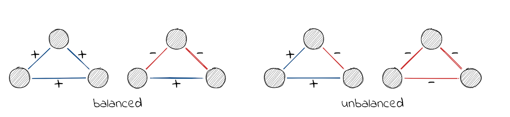
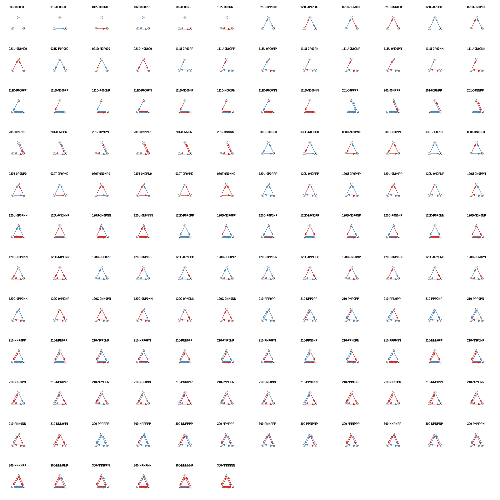
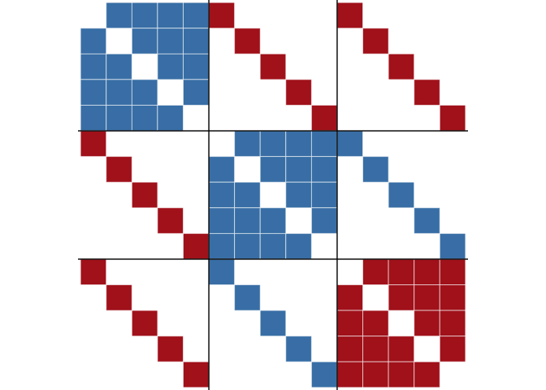

The package provides methods to analyse signed networks (i.e. networks with both positive and negative ties).
Installation
You can install the released version of signnet from CRAN with:
install.packages("signnet")The development version from is available with:
# install.packages("devtools")
devtools::install_github("schochastics/signnet")Structural Balance and Triads
The principles underlying structural balance are based on a theory in social psychology dating back to the work of Heider in the 1940s, which was generalized and extended to graphs by Cartwright and Harary in the 1950s. In its simplest form, it is defined via triangles. A triangle is balanced if all ties are positive (“the friend of a friend is a friend”) or only one tie is positive (“the enemy of my enemy is my friend”). The remaining configurations are said to be unbalanced.

A network is balanced if i.a., it can be partitioned into two vertex subsets, such that intra-group edges are all positive and inter-group edges are all negative. Determining this is easy, but measuring a degree of balancedness (i.e. how close is a network to be balanced?) is not. The package, so far, implements three methods to calculate balance scores. All are defined such that a value of one indicates perfect balance and zero perfect unbalance. Though for intermediate networks, results may vary significantly. Check this paper by Samin Aref (and his other work) for more details.
library(igraph)
library(signnet)
data("tribes")
balance_score(tribes,method = "triangles")
#> [1] 0.867647
balance_score(tribes,method = "walk")
#> [1] 0.357576
balance_score(tribes,method = "frustration")
#> [1] 0.758621For directed signed networks, triad_census_signed() can be used to compute the count for all 138 non-isomorphic signed triads. (The code to reproduce this figure can be found in this gist) 
Blockmodeling
The package implements two different blockmodeling algorithms. The classic one tries to partition the network into a specified set of groups such that intra group edges are positive and inter group edges are negative.
clu <- signed_blockmodel(tribes,k = 3,alpha = 0.5,annealing = TRUE)
clu
#> $membership
#> [1] 1 1 3 3 2 3 3 3 2 2 3 3 2 2 1 1
#>
#> $criterion
#> [1] 2The parameter k is the number of groups and alpha specifies the penalty of negative inter group and positive intra group edges. If alpha = 0 (alpha = 1) then only positive inter group (negative intra group) edges are penalized. Set alpha = 0.5 for equal penalization The algorithm is not exact and just a heuristic. If annealing = TRUE, then simulated annealing is used. This improves the result, but may take additional time.
The result of the blockmodel can be visualized with ggblock (requires ggplot2)
ggblock(tribes,clu$membership,show_blocks = TRUE,show_labels = TRUE)
The second blockmodeling technique is known as generalized blockmodeling. This method removes the restriction of positve (negative) inter (intra) group edges. Instead, a blockmatrix is passed to the function with the desired block structure. The example below illustrates the technique with a network composed of three groups with differing inter/intra group edge patterns.
# create a signed network with three groups and different inter/intra group ties
g1 <- g2 <- g3 <- graph.full(5)
V(g1)$name <- as.character(1:5)
V(g2)$name <- as.character(6:10)
V(g3)$name <- as.character(11:15)
g <- Reduce("%u%",list(g1,g2,g3))
E(g)$sign <- 1
E(g)$sign[1:10] <- -1
g <- add.edges(g,c(rbind(1:5,6:10)),attr = list(sign=-1))
g <- add.edges(g,c(rbind(1:5,11:15)),attr = list(sign=-1))
g <- add.edges(g,c(rbind(11:15,6:10)),attr = list(sign=1))
# specify the link patterns between groups
blockmat <- matrix(c(1,-1,-1,-1,1,1,-1,1,-1),3,3,byrow = TRUE)
blockmat
#> [,1] [,2] [,3]
#> [1,] 1 -1 -1
#> [2,] -1 1 1
#> [3,] -1 1 -1
clu <- signed_blockmodel_general(g,blockmat,0.5)
clu
#> $membership
#> [1] 1 1 1 1 1 2 2 2 2 2 3 3 3 3 3
#>
#> $criterion
#> [1] 0
ggblock(g,clu$membership,show_blocks = TRUE,show_labels = FALSE)
How to reach out?
Where do I report bugs?
Simply open an issue on GitHub.
How do I contribute to the package?
If you have an idea (but no code yet), open an issue on GitHub. If you want to contribute with a specific feature and have the code ready, fork the repository, add your code, and create a pull request.
Do you need support?
The easiest way is to open an issue - this way, your question is also visible to others who may face similar problems.
Code of Conduct
Please note that the signnet project is released with a Contributor Code of Conduct. By contributing to this project, you agree to abide by its terms.